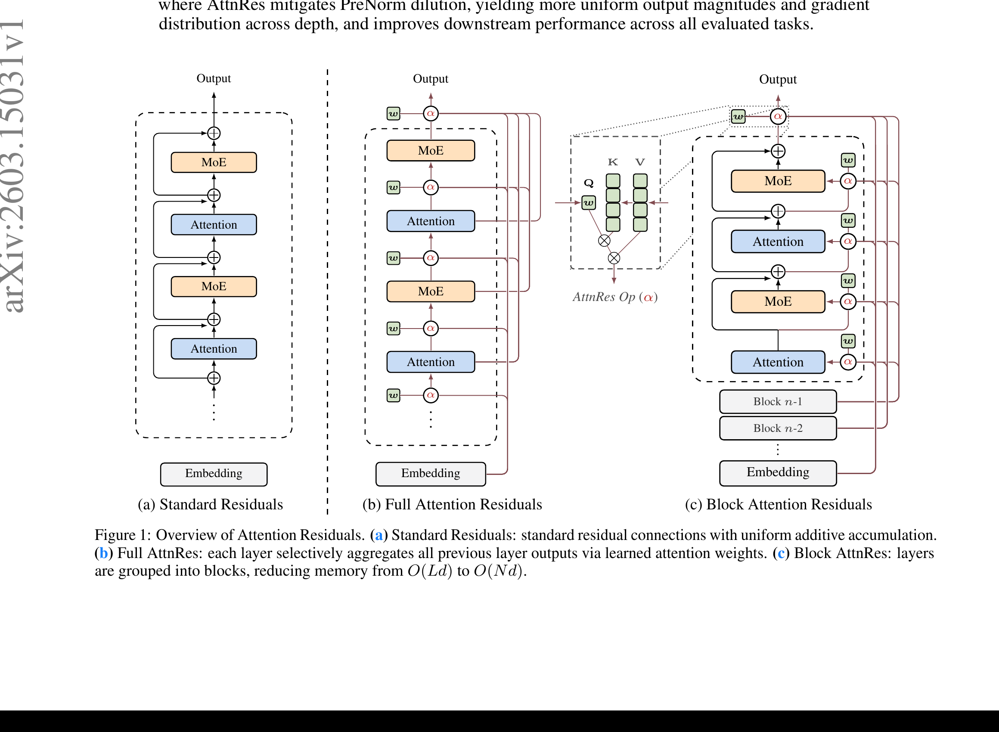
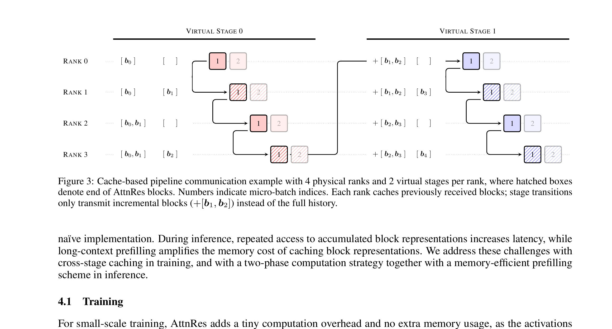
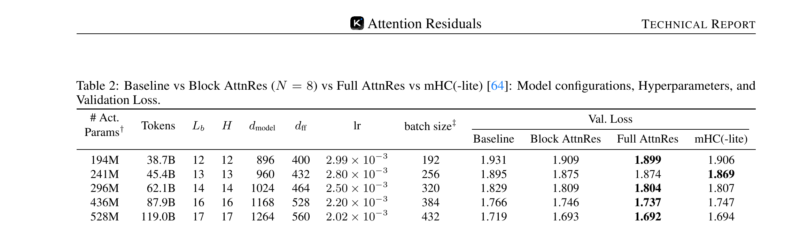
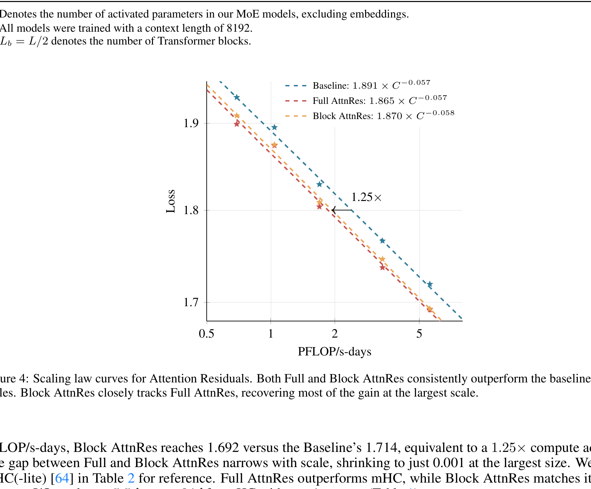
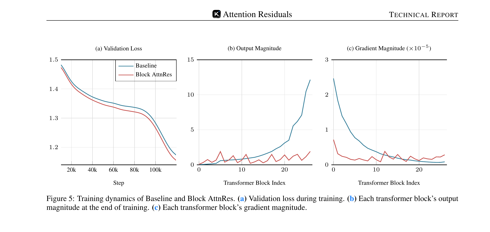
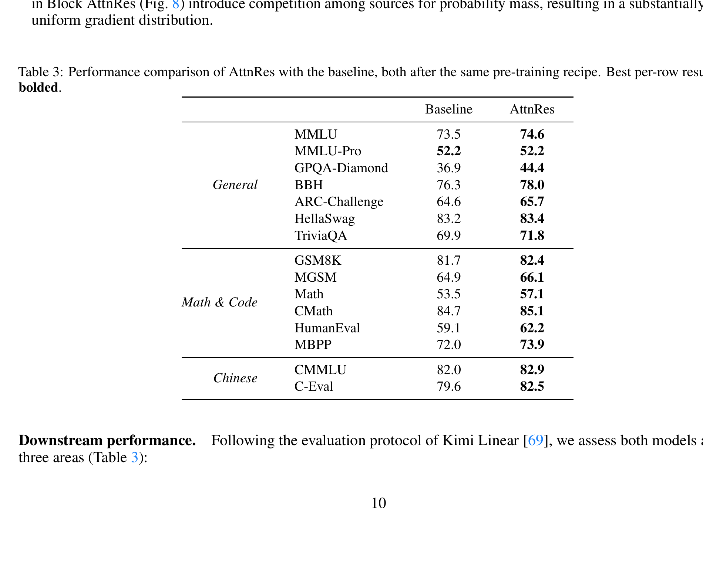
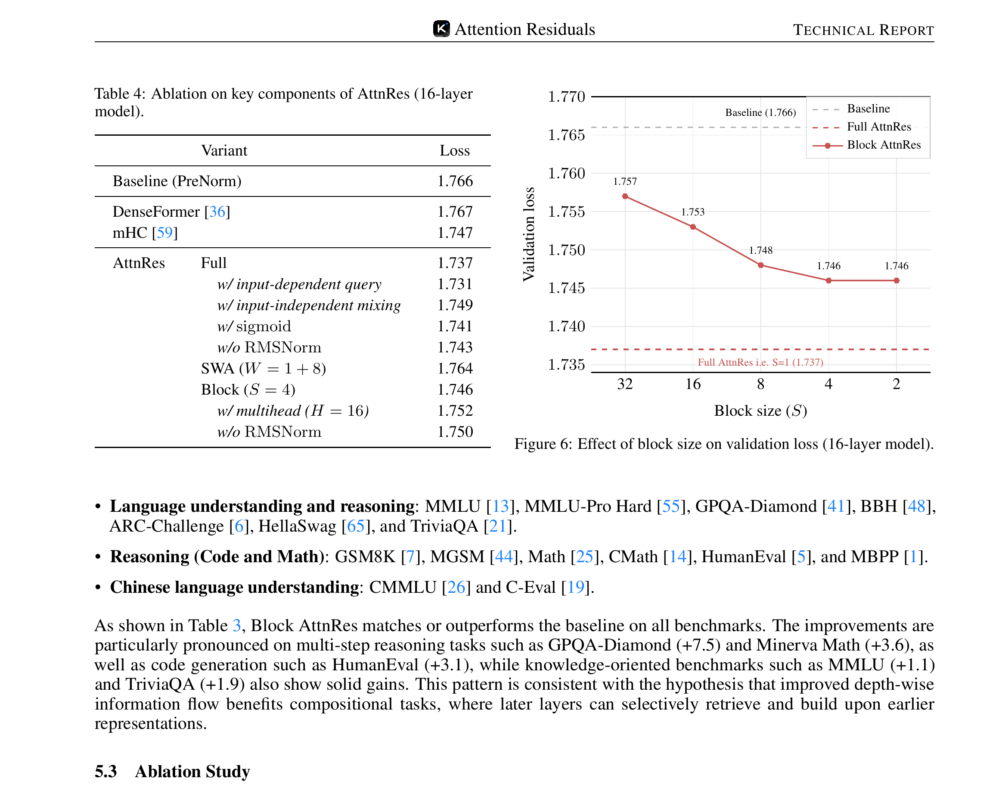
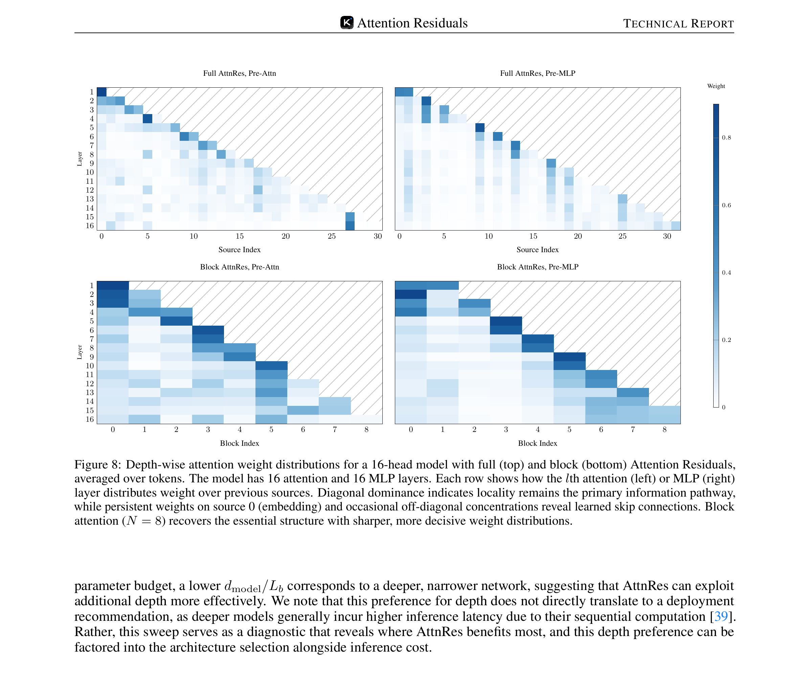
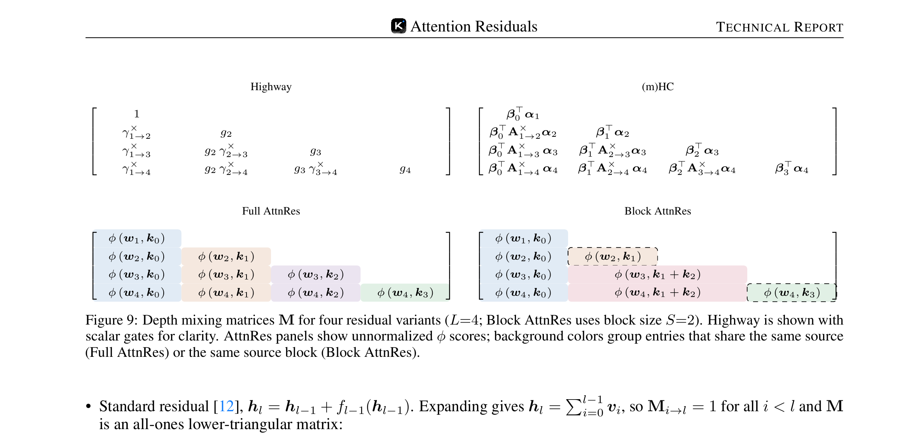

标准残差连接（hl = hl-1 + fl-1(hl-1)）是现代 LLM 的基础构件， 但它以固定权重 1 累加所有层的输出，导致两大问题： (1) 隐藏状态幅度随深度 O(L) 增长（PreNorm 稀释）； (2) 早期层的信息被淹没，无法被后续层选择性检索。
论文提出两个变体：Full AttnRes（全层注意力，O(Ld) 内存）和 Block AttnRes（分块注意力，O(Nd) 内存，N 为块数），并在 Kimi Linear 48B 模型上 验证了其有效性。
展开标准残差递推 hl = h1 + ∑ fi(hi)， 可见第 l 层的隐藏状态是所有前驱层输出的等权求和。PreNorm 下 ||hl|| 随深度 O(L) 增长，每一层的相对贡献被逐步稀释——深层网络中，大量层可以被剪除而损失极小。
每层只能访问压缩后的单一状态 hl-1，无法区分前驱各层的独立输出。 注意力层和 MLP 层接收相同的聚合状态，尽管它们可能需要不同的历史信息。
一旦信息在累加过程中被淹没，后续层无法从聚合状态中选择性恢复。 早期层学到的精细特征可能被深层的大幅度输出覆盖。
深层需要学习越来越大的输出以对抗稀释效应，导致数值不稳定。 梯度分布也高度不均匀——早期层梯度远大于深层。
AttnRes 将第 l 层的输入定义为对所有前驱层输出的 softmax 加权和：
关键设计：

Full AttnRes 的内存和通信开销为 O(Ld)，在流水线并行的大规模训练中不实际。 Block AttnRes 将 L 层分为 N 个块（每块 S = L/N 层）：
流水线并行中，标准残差只传递相邻阶段间的固定大小隐藏状态。Block AttnRes 需要传递 所有累积的块表示。朴素实现导致 O(C2) 的冗余通信。
解决方案：每个物理阶段缓存从前序阶段接收到的块表示， 后续虚拟阶段只传递增量块（新完成的块），避免重复传输。 这将峰值通信从 O(C) 降为 O(P)（P 为物理阶段数），实现与计算的完全重叠。

推理时，Block AttnRes 采用两阶段计算以降低 I/O：
在 5 个模型规模（194M-528M 激活参数）上训练 Baseline、Full AttnRes 和 Block AttnRes， 验证改进在不同计算预算下的一致性。


基于 Kimi Linear 架构（48B 总参数 / 3B 激活参数的 MoE 模型）， 27 个 Transformer Block（54 层），KDA + MLA 混合注意力，256 个路由专家 + 1 个共享专家。 Block AttnRes 使用 6 层/块，产生 9 个块 + token embedding = 10 个深度源。 在 1.4T token 上预训练。



| 方法 | 验证损失 | 权重类型 | 深度源访问 |
|---|---|---|---|
| Baseline (PreNorm) | 1.766 | 固定（全 1） | 仅 hl-1 |
| DenseFormer | 1.767 | 静态（训后固定标量） | 所有前驱层 |
| mHC (m=4) | 1.747 | 动态（学习混合矩阵） | 仅 hl-1（多流） |
| Full AttnRes | 1.737 | 动态（softmax 注意力） | 所有前驱层 |
| Block AttnRes | 1.746 | 动态（softmax 注意力） | 所有前驱块 |

论文提出了一个统一框架：所有残差变体都可以表示为深度混合矩阵 M 的不同形式， 其中 Mi→l 是第 l 层赋予第 i 层输出的权重。

首次将标准残差连接重新定义为深度维度的线性注意力，并用 softmax 注意力替代， 实现内容依赖、选择性的跨层信息聚合。
将 O(Ld) 内存降为 O(Nd)（N≈8），通过块内标准累加 + 块间注意力， 在保持大部分收益的同时实现工程可行性。
选择性聚合将输出幅度限制在有界周期性模式中，梯度分布更均匀， 从根本上解决了深层网络中层贡献被稀释的问题。
跨阶段缓存消除冗余通信，两阶段推理策略使延迟增加 <2%， 训练开销 <4%。作为标准残差的即插即用替代方案。
建立了残差连接与序列注意力的形式化对偶关系， 统一了 Residual/Highway/mHC/AttnRes 等变体在结构化矩阵框架下的分析。
在 Kimi Linear 48B (MoE) 架构上 1.4T token 预训练验证， 15 个下游基准全面提升，缩放律显示等效 25% 计算节省。
Attention Residuals 揭示了残差连接中长期被忽视的信息聚合局限， 并通过一个优雅的解决方案——深度维度的 softmax 注意力——实现了选择性的跨层信息路由。